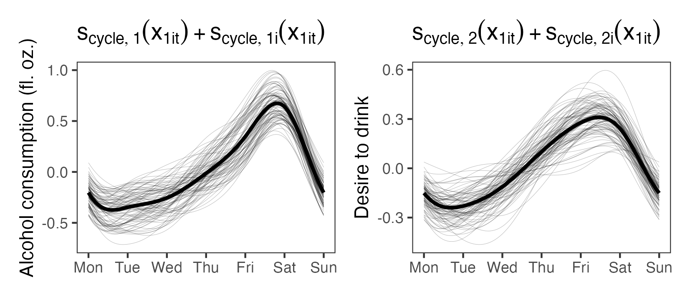

Dynamic Structural Equation Models with Regression Splines
Longitudinal Data
Classical Growth Model
Classical Growth Model
Classical Growth Model
Traits


Classical Setting
- Linear mixed models
- Structural equation models
- Generalized additive mixed models
- Growth curve models
Ecological Momentary Assessment

Burke et al. (2017)
Judd et al. (2024)
Ecological Momentary Assessment
- Individual differences in dynamics:
- Autocorrelation.
- Cross-correlation.
- Variability.
McNeish and Hamaker (2020)
McNeish and Hamaker (2020)
McNeish and Hamaker (2020)
Dynamic Structural Equation Modeling (DSEM)
Asparouhov, Hamaker, and Muthén (2018)
DSEM
- Parameters may vary between timepoints and between individuals.
- Within-individuals model \[\begin{align} \boldsymbol{y}_{1,it} = \boldsymbol{\nu}_{1} + \sum_{l=0}^{L} \boldsymbol{\Lambda}_{1,l} \boldsymbol{\eta}_{1,i,t-l} + \sum_{l=0}^{L} \boldsymbol{R}_{l} \boldsymbol{y}_{1,i,t-l} + \boldsymbol{K}_{1} \boldsymbol{X}_{1,it} + \boldsymbol{\epsilon}_{1,it} \\ \boldsymbol{\eta}_{1,it} = \boldsymbol{\alpha}_{1} + \sum_{l=0}^{L} \boldsymbol{B}_{1,l} \boldsymbol{\eta}_{1,i,t-l} + \sum_{l=0}^{L} \boldsymbol{Q}_{l} \boldsymbol{y}_{1,i,t-l} + \boldsymbol{\Gamma}_{1} \boldsymbol{X}_{1,it} + \boldsymbol{\xi}_{1,it}. \label{eq:WithinLevelModel} \end{align}\]
Three Issues
- Issue 1: Cyclic behavior and nonlinear trends.
- Issue 2: Proprietary software kills innovation (but admittedly does help non-specialists).
- Issue 3: Computation scales poorly when using latent variables.
Issue 1: Cycles and nonlinear trends
Sørensen and McCormick (2025)
Data from Carney et al. (2000)
Judd and Klingberg (2021)
DSEM with Splines
- Should not detrend prior to analysis!
- Also, the trend may be of interest.
DSEM with Splines
\[\begin{align} \label{eq:SplineVAR1} \boldsymbol{y}_{it} &= \boldsymbol{\alpha}_{i} + \boldsymbol{f}_{i}\left(\boldsymbol{x}_{it}\right) + \boldsymbol{\Phi}_{i} \left\{\boldsymbol{y}_{i,t-1} - \boldsymbol{\alpha}_{i} - \boldsymbol{f}_{i}\left(\boldsymbol{x}_{i,t-1}\right)\right\} + \boldsymbol{\delta}_{i} \\ & \delta_{ip} \sim N(0, \psi_{ip}), ~ \boldsymbol{\delta}_{i} = (\delta_{i1}, \dots, \delta_{iP})' \end{align}\]
\[\begin{align} \label{eq:VARAlphaLevel2} \boldsymbol{\alpha}_{i} &= \boldsymbol{\gamma}_{\alpha} + \boldsymbol{u}_{\alpha i} \\ \label{eq:VARPhiLevel2} \text{vec}\left(\boldsymbol{\Phi}_{i}\right) &= \boldsymbol{\gamma}_{\phi} + \boldsymbol{u}_{\phi i} \\ \label{eq:VARPsiLevel2} \log \boldsymbol{\psi}_{i}^{2} &= \boldsymbol{\gamma}_{\psi} + \boldsymbol{u}_{\psi i} \\ & \boldsymbol{u}_{i} = (\boldsymbol{u}_{\alpha i}', \boldsymbol{\gamma}_{\psi} + \boldsymbol{u}_{\psi i}', \boldsymbol{u}_{\psi i}')' \sim N(\boldsymbol{0}, \boldsymbol{T}) \\ \end{align}\]
\[\begin{align} \label{eq:VARSmoothLevel2} \boldsymbol{f}_{i}\left(\boldsymbol{x}_{it}\right) &= \boldsymbol{s}\left(\boldsymbol{x}_{it}\right) + \boldsymbol{s}_{p}\left(\boldsymbol{x}_{it}\right) + \boldsymbol{s}_{i}\left(\boldsymbol{x}_{it}\right) \end{align}\]
Regression Splines
\[ s(x) = \sum_{k=1}^{K} \beta_{k} b_{k}(x) \]
with some smoothing prior.
\[ \begin{bmatrix} s(x_{1}) \\ s(x_{2}) \\ \vdots \\ s(x_{P}) \end{bmatrix} = \tilde{\boldsymbol{X}}_{1} \tilde{\boldsymbol{\beta}}_{1} + \tilde{\boldsymbol{X}}_{2} \tilde{\boldsymbol{\beta}}_{2} \]
Hierarchical Smooth Terms
Example Application
Diary data of alcohol consumption, desire to drink and perceived stress (Carney et al. 2000).
Data from Carney et al. (2000)
Smooth Functions
\[\begin{equation*} \begin{bmatrix} f_{1i}\left(\boldsymbol{x}_{it}\right) \\ f_{2i}\left(\boldsymbol{x}_{it}\right) \\ f_{3i}\left(\boldsymbol{x}_{it}\right) \end{bmatrix} = \begin{bmatrix} s_{\text{cycle},1}\left(x_{1it}\right) + s_{\text{cycle},1i}\left(x_{1it}\right) + \beta_{1i}t \\ s_{\text{cycle},2}\left(x_{1it}\right) + s_{\text{cycle},2i}\left(x_{1it}\right) + \beta_{2i}t \\ \beta_{3i}t \end{bmatrix} \end{equation*}\]
More than 10,000 parameters.
Population-Level Cycles and Trends
Individual-Level Dynamics
Individual Cyclic Terms
Open Source Implementation (Issue 2)
- Stan (Carpenter et al. 2017) code in OSF repository.
- No U-Turn Sampler (NUTS) (Hoffman and Gelman 2014) with:
- Weakly informative priors.
- Regression splines, intermediate rank apprach to smoothing (Wood 2011).
Issue 3: Computation with Latent Variables
Manuscript in preparation, Sørensen (2025).
DSEM in Detail
Response Decomposition
\[\begin{equation} \label{eq:ResponseDecomposition} \boldsymbol{y}_{it} = \boldsymbol{y}_{1,it} + \boldsymbol{y}_{2,i} + \boldsymbol{y}_{3,t}. \end{equation}\]
Between-Timepoints Model
\[\begin{align} \boldsymbol{y}_{3,t} &= \boldsymbol{\nu}_{3} + \boldsymbol{\Lambda}_{3} \boldsymbol{\eta}_{3,t} + \boldsymbol{K}_{3} \boldsymbol{X}_{3,t} + \boldsymbol{\epsilon}_{3,t} \\ \boldsymbol{\eta}_{3,t} &= \boldsymbol{\alpha}_{3} + \boldsymbol{B}_{3}\boldsymbol{\eta}_{3,t} + \boldsymbol{\Gamma}_{3}\boldsymbol{X}_{3,t} + \boldsymbol{\zeta}_{3,t}. \label{eq:BetweenTimepointModel} \end{align}\]
\[\begin{align} &\boldsymbol{\epsilon}_{3,t} \sim N(\boldsymbol{0}, \boldsymbol{\Sigma}_{3}) \\ &\boldsymbol{\zeta}_{3,t} \sim N(\boldsymbol{0}, \boldsymbol{\Psi}_{3}) \end{align}\]
Between-Individuals Model
\[\begin{align} \boldsymbol{y}_{2,i} &= \boldsymbol{\nu}_{2} + \boldsymbol{\Lambda}_{2} \boldsymbol{\eta}_{2,i} + \boldsymbol{K}_{2}\boldsymbol{X}_{2,i} + \boldsymbol{\epsilon}_{2,i} \\ \boldsymbol{\eta}_{2,i} &= \boldsymbol{\alpha}_{2} + \boldsymbol{B}_{2} \boldsymbol{\eta}_{2,i} + \boldsymbol{\Gamma}_{2} \boldsymbol{X}_{2,i} + \boldsymbol{\xi}_{2,i}, \label{eq:BetweenIndividualModel} \end{align}\]
\[\begin{align} &\boldsymbol{\epsilon}_{2,i} \sim N(\boldsymbol{0}, \boldsymbol{\Sigma}_{2}) \\ &\boldsymbol{\zeta}_{2,i} \sim N(\boldsymbol{0}, \boldsymbol{\Psi}_{2}) \end{align}\]
Within-Level Model
\[\begin{align} \boldsymbol{y}_{1,it} &= \boldsymbol{\nu}_{1,it} + \sum_{l=0}^{L} \boldsymbol{\Lambda}_{1,lit} \boldsymbol{\eta}_{1,i,t-l} + \sum_{l=0}^{L} \boldsymbol{R}_{lit} \boldsymbol{y}_{1,i,t-l} + \boldsymbol{K}_{1,it} \boldsymbol{X}_{1,it} + \boldsymbol{\epsilon}_{1,it} \\ \boldsymbol{\eta}_{1,it} &= \boldsymbol{\alpha}_{1,it} + \sum_{l=0}^{L} \boldsymbol{B}_{1,lit} \boldsymbol{\eta}_{1,i,t-l} + \sum_{l=0}^{L} \boldsymbol{Q}_{lit} \boldsymbol{y}_{1,i,t-l} + \boldsymbol{\Gamma}_{1,it} \boldsymbol{X}_{1,it} + \boldsymbol{\xi}_{1,it} \end{align}\]
\[\begin{align} &\boldsymbol{\epsilon}_{1,it} \sim N(\boldsymbol{0}, \boldsymbol{\Sigma}_{1,it}) \\ &\boldsymbol{\zeta} \sim N(\boldsymbol{0}, \boldsymbol{\Psi}_{1,it}) \end{align}\]
Sampling of Latent States
Decomposition for all parameters except latent states \(\boldsymbol{\eta}_{it}\): \[ \theta_{it} = \theta + \theta_{i} + \theta_{t} \]
Sampling of Latent States
- Gibbs sampler of Asparouhov, Hamaker, and Muthén (2018) has more blocks, but essentially
\[ \theta \sim P(\theta | \Theta_{i}, \Theta_{t}, \boldsymbol{\eta}_{it}) \]
\[ \theta_{i} \sim P(\theta_{i} | \Theta, \Theta_{t}, \boldsymbol{\eta}_{it}) \text{ for } i=1,\dots,N \]
\[ \theta_{t} \sim P(\theta_{t} | \Theta, \Theta_{i}, \boldsymbol{\eta}_{it}) \text{ for } t=1,\dots,T \]
\[ \boldsymbol{\eta}_{it} \sim P(\boldsymbol{\eta}_{it} | \Theta, \Theta_{i}, \Theta_{t}) \text{ for } i=1,\dots,N \text{ and } t=1,\dots, T \]
\[ \mathcal{O}(N \times T) \]
Theorem in Forthcoming Paper
Within-level DSEM is equivalent to the state space model
\[\begin{align} \label{eq:DSEMStateSpaceTheorem} \boldsymbol{y}_{1,it} &= \boldsymbol{Z}_{it} \tilde{\boldsymbol{\eta}}_{1,it} + \boldsymbol{d}_{it} + \boldsymbol{v}_{it}, \quad \boldsymbol{v}_{it} \sim N\left(\boldsymbol{0}, \boldsymbol{H}_{it}\right) \\ \tilde{\boldsymbol{\eta}}_{1,it} &= \boldsymbol{T}_{it} \tilde{\boldsymbol{\eta}}_{1,i,t-1} + \boldsymbol{c}_{it} + \boldsymbol{w}_{it}, \quad \boldsymbol{w}_{it} \sim N\left(\boldsymbol{0}, \boldsymbol{W}_{it}\right), \end{align}\]
with augmented state \(\tilde{\boldsymbol{\eta}}_{1,it}\).
Generic expression for all matrices and vectors are pretty nasty.
State Space Formulation
Sampler can go like this:
- Propose \(\theta^{*} \sim q(\theta^{*} | \theta)\)
- Compute using Kalman filter \(p(\boldsymbol{y} | \theta^{*}, \theta_{i}, \theta_{t})\)
- Accept or reject: \[ \alpha = \text{min}\left\{1, \frac{p(\boldsymbol{y} | \theta^{*}, \theta_{i}, \theta_{t}) p(\theta^{*}) q(\theta | \theta^{*})}{p(\boldsymbol{y} | \theta, \theta_{i}, \theta_{t}) p(\theta) q(\theta^{*} | \theta)} \right\} \]
- Repeat for \(\theta_{i}\) and \(\theta_{t}\)
Remaining Work
- Caching
- Block updates for parameters
- NUTS vs random walk Metropolis vs Gibbs
- Particle filters for non-Gaussian measurement models
Questions?